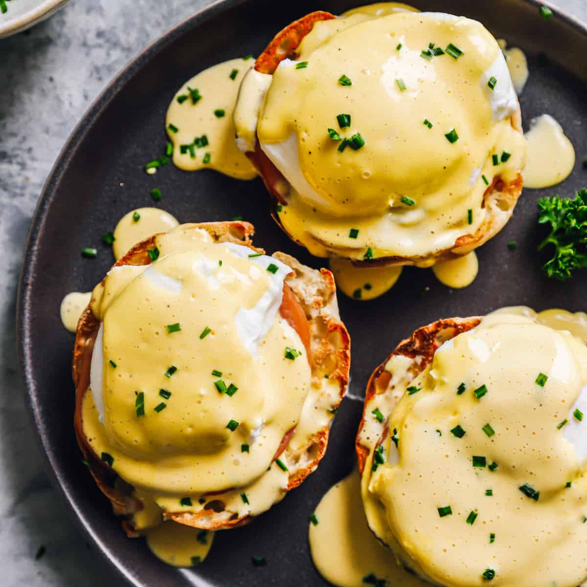

Description
Poached eggs on top of an english muffin and bacon, with hollandaise sauce on top
Ingredients
For the eggs
- 3 table spoons of white vinegar
- 3 eggs
- 2 english muffins
- bacon
For the sauce
- 125g butter
- 2 egg yolks
- 1/2 table spoon white vinegar
- lemon juice
Steps
Poached eggs
- Bring a deep pan of water to the boil and add 3 tbsp white vinegar at low heat.
- Break each egg into a different cup. Prepare a paper towel to dry the eggs.
- Swirl the simmering water creating a vortex, carefully add one egg at a time for a minute.
- Very carefully remove the eggs from the water and dry them.
Hollandaise Sauce
- Use a glass bowl on top of the pan with water.
- Melt the butter in a sauce pan skimming any solids from the surface.
- Add 2 egg yolks, 1/2 tbsp of white vinegar, the juice of one lemon a pinch of salt and pepper.
- Incorporate everything
Eggs Benedict
- Put the muffin with bacon.
- Put one poached egg and cover it with one spoon of hollandaise sauce.